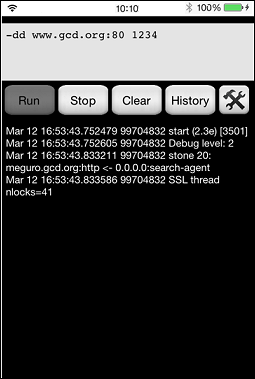
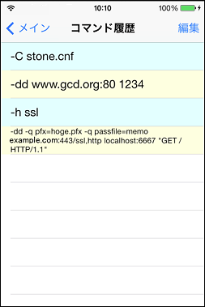
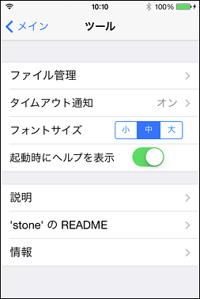
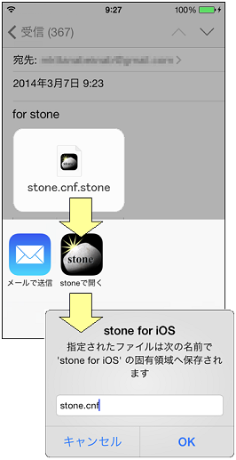

説明
「stone for iOS」は、仙石浩明 (Hiroaki Sengoku) 氏によるオープンソースの多機能パケットリピータソフトウェア「stone」を iOS 上で利用するための GUI アプリケーションです。
(1) メイン画面
画面最上部のコマンドフィールドに stone パラメータを記述します。パラメータの記述方法は [ツールメニュー - README] を参照して下さい。
各ボタンの機能
- [Run] - stone の処理を開始します
- [Stop] - 本アプリケーションを終了します
- [Clear] - 表示中のログを消去します
- [History] - コマンド履歴を表示します
- ツールボタン - ツールメニューを表示します
"-dd www.gcd.org:80 1234"
初期状態でコマンドフィールドに表示されている上記のパラメータは stone の効果を確認するためのサンプルです。[Run] で stone の処理を開始し、ブラウザから http://[この端末の IP アドレス]:1234/ へアクセスすると http://www.gcd.org/ （stone 公式サイト）へ繋がります。(2) コマンド履歴画面
stone で実行したコマンドパラメータの履歴です。タップするとメイン画面のコマンドフィールドへペーストされます。「編集」ボタンからエントリの削除・並べ替えができます。
(3) ツールメニュー
各種設定やヘルプを表示します。詳細は各画面をご覧下さい。
(4) ローカルファイルの保存
".stone" の拡張子が付与された任意のファイルをメーラ等のアプリケーション上でタップすると、そのファイルを本アプリケーションのローカルファイルとしてコピーすることができます。保存ずみのローカルファイルは stone パラメータへの指定が可能です。
（例）"-C stone.cnf"
※現バージョンの stone for iOS は、iOS キーチェーンへの電子証明書のインポートおよび参照には未対応です。証明書はローカルファイルとして保存した上で使用して下さい。
本ソフトウェアは以下のオープンソースソフトウェア資産を使用しています。 素晴らしいソフトウェアを公開されている各氏に深謝いたします。
stone
Copyright (c) 1995-2014 by Hiroaki Sengoku
「この stone に関する全ての著作権は、原著作者である仙石浩明が所有します。この stone は、GNU General Public License (GPL) に準ずるフリーソフトウェアです。個人的に使用する場合は、改変・複製に制限はありません。配布する場合は GPL に従って下さい。また、openssl とリンクして使用することを許可します。」
「この stone は無保証です。この stone を使って生じたいかなる損害に対しても、原著作者は責任を負いません。詳しくは GPL を参照して下さい。」
OpenSSL
Copyright (c) 1998-2011 The OpenSSL Project. All rights reserved.
"This product includes software developed by the OpenSSL Project for use in the OpenSSL Toolkit. (http://www.openssl.org/)"
"THIS SOFTWARE IS PROVIDED BY THE OpenSSL PROJECT ``AS IS'' AND ANY EXPRESSED OR IMPLIED WARRANTIES, INCLUDING, BUT NOT LIMITED TO, THE IMPLIED WARRANTIES OF MERCHANTABILITY AND FITNESS FOR A PARTICULAR PURPOSE ARE DISCLAIMED. IN NO EVENT SHALL THE OpenSSL PROJECT OR ITS CONTRIBUTORS BE LIABLE FOR ANY DIRECT, INDIRECT, INCIDENTAL, SPECIAL, EXEMPLARY, OR CONSEQUENTIAL DAMAGES (INCLUDING, BUT NOT LIMITED TO, PROCUREMENT OF SUBSTITUTE GOODS OR SERVICES; LOSS OF USE, DATA, OR PROFITS; OR BUSINESS INTERRUPTION) HOWEVER CAUSED AND ON ANY THEORY OF LIABILITY, WHETHER IN CONTRACT, STRICT LIABILITY, OR TORT (INCLUDING NEGLIGENCE OR OTHERWISE) ARISING IN ANY WAY OUT OF THE USE OF THIS SOFTWARE, EVEN IF ADVISED OF THE POSSIBILITY OF SUCH DAMAGE."
"This product includes cryptographic software written by Eric Young (eay@cryptsoft.com). This product includes software written by Tim Hudson (tjh@cryptsoft.com)."
「stone for iOS」はオープンソースソフトウェアです。本ソフトウェアのソースコードは https://github.com/mkttanabe/stone-for-iOS で公開しています。「stone for iOS」は GPL に基づいてライセンスされます。
Copyright (C) 2014 KLab Inc.
written by TANABE Makoto <mkttanabe2012@gmail.com>